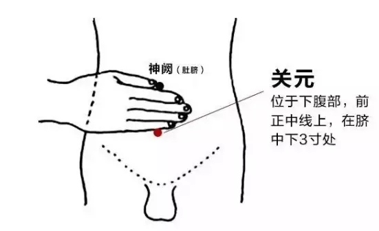
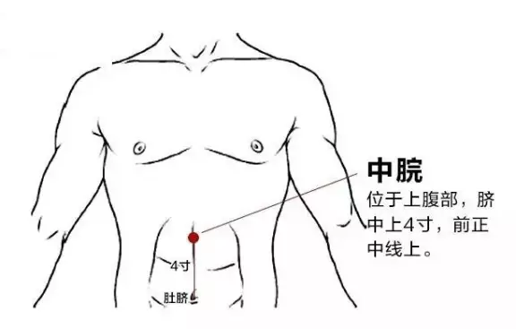
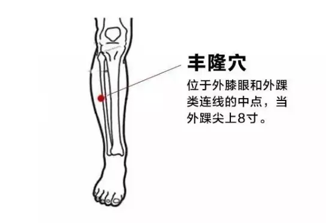
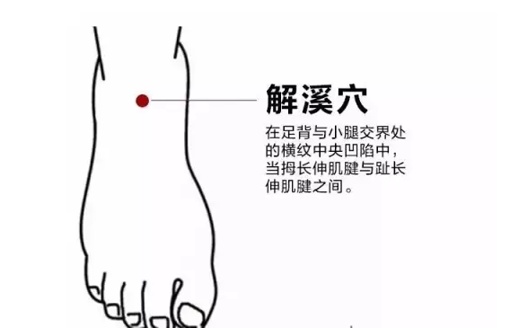
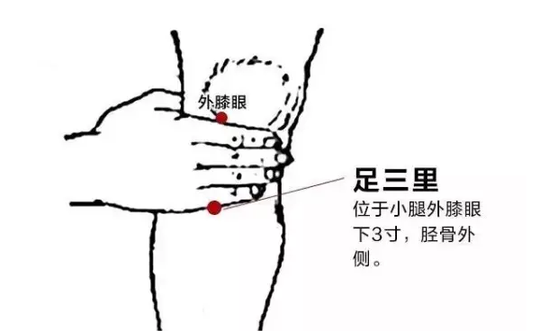
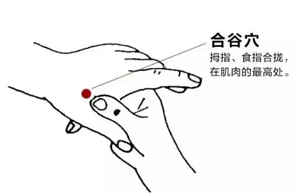
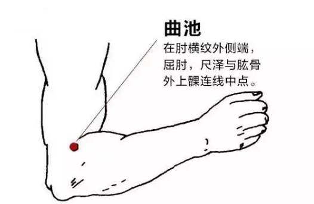

痰湿体质这样艾灸效果好
痰湿，一种病症名，指人的体质的一种症状。亦称为迟冷质，多由饮食不当或疾病困扰而导致。
这里的“痰”并非只指一般概念中的痰，而是指人体津液的异常积留，是病理性的产物;“湿”分为内湿和外湿，外湿指空气潮湿、环境潮湿，如淋雨、居处潮湿等，外在湿气会侵犯人体而致病;内湿是指消化系统运作失宜，对水在体内的流动失控以致津液停聚，或因饮食水分过多，或因饮酒、乳酪、生冷饮料，而使体内津液聚停而形成内湿。
此种体质者多伴有脾胃功能失调、内分泌失调等。
痰湿体质的特点
1.体形面色：体形肥胖，腹部肥满而松软，四肢浮肿，按之凹陷，性格比较温和，面部皮肤油脂较多，面色淡黄而暗，眼泡微浮，容易困倦，面少血色，白中常发青，且少光泽
2. 舌头：舌体胖大，苔滑腻，舌苔白腻或甜，舌边常有齿印成排
3. 口手和脚：口中粘腻，口唇色淡，很少感觉口渴，不想喝水，容易出汗，汗出后皮肤多凉，头身重困，关节疼痛重着、肌肤麻木，易出现耳鸣，年过60 岁者中耳聋者多见
4. 感觉及睡眠：人体好倦缩，手足冰凉，胸闷，痰多，容易困倦，有关节酸痛、肌肤麻木、肠胃不适
5. 脉象：脉濡而滑
6. 喜好：懒动、嗜睡、身重如裹，喜食肥甘甜黏，夏天好过，冬天难熬
7. 大小便：大便次数多，不成形，尤其是早晨大便急，一泻为快，一夜三四次小便，且尿量多而色清如水
中医方面认为，人体之中由于正气不足，这就导致身体抵抗力下降，一些湿邪就会入侵我们的身体，导致生病。所以说，想要令身体恢复健康，那么就需要去除体内的湿气。下面分享分享一下祛痰祛湿艾灸的方法。
祛痰祛湿灸哪些穴位?
中医认为，艾灸具有很好的补阳祛湿的作用，是一种非常好的养生、治病手段，在正确的穴位之中进行艾灸，不仅能够有效的去除身体之中的湿邪，同时还具有预防各种各样疾病的功效。具体的艾灸穴位如下：
第一：艾灸血海穴
屈膝，在大腿内侧，髌底内侧端上两寸，股四头肌内侧头的隆起处。坐在椅子上将腿绷直后，会在膝盖内侧看到一个凹陷的地方，凹陷上方隆起的肌肉顶端就是血海穴。作用：可辅助缓解月经不调、闭经、气逆腹胀、湿疹、皮肤瘙痒、贫血等状况。
第二：艾灸关元穴

这个穴道的位置在我们的肚脐下面大约三寸的位置，是一种具有很好养生以及强健身体功效的穴位。长期对这个穴位进行艾灸，能够有效的调理气血，并且对于补肾固精也具有很好的效果。一般情况下，如果是使用艾灸条进行，时间应该控制在20~30分钟左右。
第三：艾灸中脘穴

位于上腹部，在肚脐上4寸的腹中线上，可仰卧取穴，胸骨下端和肚脐连接线中点即为此穴。
作用：这个穴位对于缓解伏天暑湿造成的腹胀、反胃、消化不良、泄泻、便秘等都有很好的作用，此外，对于秋燥失眠等也有很好的缓解作用。
这个穴道的位置在腹部的正中线，也就是肚脐上面大约四寸左右的位置。一般情况下，如果是食用艾条进行，时间应该控制在15~20分钟。在这个穴位进行艾灸，能够有效的缓解胃部所出现的各种疾病以及症状，例如腹泻、拉肚子以及胃溃疡等等。
第四：艾灸丰隆穴

在小腿前外侧，外踝尖上8寸，距胫骨前缘二横指(拇指)。作用：中医认为湿必生痰，此穴位可以化痰湿、清神志，尤其适合初秋里湿邪较盛的人群。
作用：可辅助缓解痰湿诱发的胸腹痛、呕吐、便秘、眩晕、烦心、面浮肿、四肢肿等状况。
第五：艾灸解溪穴

这个穴道的位置在祖辈和消退交界的位置中，横纹中间的凹陷位置就是解溪穴了。这个穴道是一个非常重要的全身祛痰祛湿的穴位，进行艾灸之后能够有效的解决下半身水肿的问题，最好能够每天进行艾灸十五分钟左右。
第六：艾灸足三里穴

这个位置在外膝盖下面三寸，也就是在胫骨外侧一横指左右。将艾条使用10~15分钟;艾罐则是进行艾灸20~30分钟左右，能够获得很好的效果。
第七：艾灸合谷穴

中医认为，这个穴位是大肠经的一个总开关，具有非常重要的作用。如果脸部的皮肤出现了红血丝，那么可以在合谷穴进行艾灸，能够起到非常好的缓解作用。合谷穴具有很好的升清降浊以及疏通气血的作用。但是，如果是一些体质比较差或者是怀有身孕的女性，那么在进行这个穴位艾灸的时候一定要特别注意，最好能够禁止使用。
这个穴道的取穴方法主要就是将一只手的拇指第一个关节横纹对着另一只手的虎口，然后屈曲按下，指尖的位置就是合谷穴了。十天为一个疗程，每天进行大约10~15分钟左右，直到穴道微微发红就可以停止了，每天进行一次。
第八：艾灸曲池穴

这个穴道的位置在屈起肘部的时候出现横纹的外侧段，是大肠经的合穴，也就是说血脉之气从四肢对位置汇集到这里。对这个穴位进行艾灸，能够很好的起到调理气血以及去除风湿的作用，如果身体容易出现烦闷以及手麻的情况，对这个穴位艾灸能够很好的改善血液循环，改善不适应的情况。
第九：艾灸阴陵泉穴
采用正坐或仰卧姿势，阴陵泉穴位于小腿内侧，在胫骨内侧髁后下方凹陷处，处于胫骨后缘和腓肠肌之间，比目鱼肌起点上。
作用：体内有湿就容易感受外湿，别让体内湿邪太大，除了外散还要内化一部分。在阴陵泉穴的位置刮痧，可以起到内化湿邪的作用，还可清利湿热、健脾理气、益肾调经、通经活络，辅助缓解腹胀、泄泻、水肿、膝痛等。
通过上文的介绍之后，相信大家对于祛痰祛湿灸哪个穴位都具有一定的了解。在日常生活中，我们一定要做好保健身体的工作，并且密切注意身体的变化，避免病邪、湿邪进入我们的身体，引发湿症以及各种疾病。通常情况下，我们所说的湿症分为两种，一种是内湿，另一种则是外湿。除了上面所说的使用艾灸的方法令身体恢复健康之外，日常生活中也需要养成科学的生活方式，饮食宜清淡，千万不能够过度的服用烟酒或者是食用一些生冷寒凉的食物，这对于脾胃功能、消化能力以及身体健康情况等等都具有非常不好的影响。另外，还应该进行适当的体育锻炼，这样才能更好的提高身体素质。
上一篇：艾疗：艾灸治疗糖尿病效果怎么样？ 下一篇：艾灸需要坚持，请不要动不动都问能否“根治”